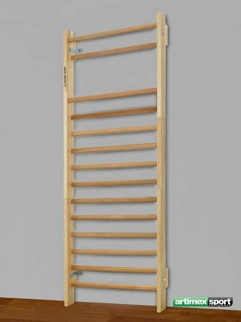
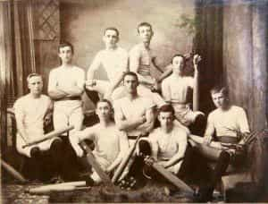
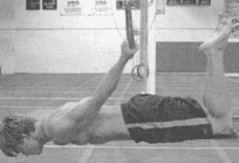
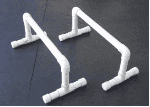

< < < Back
5 Mysterious Workout Devices You May Have Encountered In The Gym – Return Of Kings
Many fitness acolytes, after getting good results in the first few months of their training, will seek the use of new exercises and equipments to gain a competitive edge over their fellow gym goers. Or alternatively, some of our younger readers have gone foraging through the storage rooms of their high school gymnasiums seeking that some goal. Either way, at some point in a physical culturist’s “career”, they’ll find many mysterious exercise devices that are completely obtuse to them, boggling the mind as to how they are supposed to be used, and for what purpose.
You likely don’t need me to tell you this, but the majority of exercise devices that are out on the market today are completely worthless—in fact I have told you that! However, there are a few devices that are somewhat obscure and rarely used, but are great tools for your strength, endurance, and flexibility training, tools that without exception are 100 years old at their youngest and that have sadly been forgotten by the masses for a variety of completely inane reasons (marketing, for the most part, but we here at Return of Kings are already against consumer culture so marketing has no effect upon me). And so without further ado…
1. The Swedish Ladder
Most likely a device that you’ve seen bolted to the back wall of your high school gym class, the Swedish ladder at first glance seems to be more akin to some sort of torture device than a piece of exercise equipment (insert hacky joke about “derp all exercise is a torture device” here). And indeed, upon trying it, it doesn’t seem to be useful for much more than using it in the manner of a ladder.
However, a bit of ingenuity will show that it is useful for any calisthenic exercise that requires some degree of verticality. You can put your stomach to the bar to stretch your back, or put your back to the bars to do pull-ups and L-Sits. The regular gradations of the rungs make it a must for graduated stretches such as the wushu stretchkick and belly-to-wall handstands, and it can also be used in training free-hanging exercises such as the back lever and the human flag.

2. Indian Clubs
For better or for worse associated with the Gilded Age, they are, as the name implies, an import from the subcontinent. Essentially, they are a dumbbell that is stretched out, forcing the wrists and shoulders to act as a lever to support the weight. In practice, this make the shield casts and other exercises you do with the clubs much more difficult than they would be with a standard dumbbell.
There are a variety of exercises that are done *solely* with the Indian club, and all of them are great ways to build strength and joint health in the upper body (and will be the subject of articles should I ever get my hands on a set). I personally like them more than kettlebells, which is unfortunate because the latter are much more prevalent. Should you find a set of Indian clubs, be sure to use them.

3. Medicine Balls
Let’s make something clear: I am NOT referring to the big bouncy inflatable “Exercise balls” that middle aged ladies use to exercise. Instead, I’m talking about the medicine ball, a ball that weighs anywhere between 2-50 pounds and can be used for a variety of purposes, ranging from an unstable support for transitional calisthenic progressions, to tossing and catching it off the wall to train the chest and abdominal muscles to brace for impact. It can also be used as a weight in moves such as the weighted sit-up, should you not want to risk damaging your floor.
This piece of equipment has been around for the better part of three millennia, and has served all from gladiators to the 19th century pioneers of physical culture. It would be worth adding to your repertoire.
4. Gymnastic Rings
Most people probably have some sort of conception of how these work, if only from watching the Olympics every four years. However, the lay person can use these difficult, but rewarding, tools for their own fitness.
The mere act of doing standard calisthenic exercises (L-Sit, pull-up, etc.) is made exponentially more difficult by the act of doing these on the unstable surface of the rings. And the open space between the rings facilitates more complex maneuvers like the ring handstand, which leads to even more difficult calisthenic techniques like the ring handstand pushup, all of which train the entire body to an enormous degree and eventually lead one to the monstrously difficult maneuvers such as the iron cross.

5. Parallettes
Likely the simplest of these obscure workout devices, the parallettes are merely a bar and platform placed on the floor. However, they are integral to gymnastics training due to elevating the body off the floor, making them an essential for l-sits, v-sits, true handstand pushups (the elevation allows you to dip deeper than you would off the floor), and other maneuvers. Boxes or chairs can be substituted for these, although grasping the bar does work different hand and forearm muscles than a flat hand.

So the next time you see one of these, give them a try, it just might give you that edge you’re looking for.
Read More: 5 Pre-Workout Tips For Consistently Better Workouts